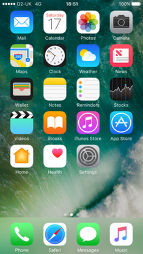

iOS 10
O iOS 10 é o décimo maior lançamento do sistema operacional móvel iOS desenvolvido pela Apple Inc. , sendo o sucessor do iOS 9 . Ele foi anunciado na Worldwide Developers Conference da empresa em 13 de junho de 2016 e foi lançado em 13 de setembro de 2016. Ele foi sucedido pelo iOS 11 em 19 de setembro de 2017.
O iOS 10 incorpora alterações no 3D Touch e na tela de bloqueio. Existem novos recursos para alguns aplicativos: Mensagens tem emojis adicionais e aplicativos de terceiros podem estender a funcionalidade no iMessage, o Maps possui uma interface redesenhada e funções adicionais de terceiros, o aplicativo Home gerencia os acessórios habilitados para "HomeKit", o Photos possui pesquisa algorítmica e a categorização de mídia conhecida como "Memórias", e a Siri é compatível com solicitações específicas de aplicativos de terceiros, como iniciar aplicativos de exercícios, enviar mensagens instantâneas , usar o Lyft ou o Uber ou usar funções de pagamento.
As revisões do iOS 10 foram principalmente positivas. Os revisores destacaram as atualizações significativas do iMessage, Siri, Photos, 3D Touch e da tela de bloqueio como alterações bem-vindas. O suporte de extensão de terceiros para o iMessage significava que ele estava "se tornando uma plataforma", embora a interface do usuário tenha sido criticada por ser difícil de entender. A integração de terceiros no Siri foi "ótima", embora o assistente de voz tenha sido criticado por não ter se tornado mais inteligente do que antes. Os analistas ficaram impressionados com a tecnologia de reconhecimento de imagem do Photos, embora notassem que ainda era um "trabalho em progresso" com uma taxa de erro maior do que a concorrência. 3D Touch "finalmente parece útil" e "funciona em quase todas as partes do sistema operacional". A tela de bloqueio era "muito mais personalizável do que antes", e os revisores gostaram que as bolhas de notificação pudessem ser expandidas para ver mais informações sem precisar desbloquear o telefone.
Um mês após o lançamento, o iOS 10 foi instalado em 54% dos dispositivos iOS, uma "migração ligeiramente mais lenta" do que para o lançamento do iOS 9, especulado como sendo causado por um problema de lançamento antecipado que pode "colocar alguns usuários fora do download". a atualização". A adoção do iOS 10 pelo usuário aumentou constantemente nos meses seguintes, totalizando 89% dos dispositivos ativos em setembro de 2017.

Desenvolvedor Apple Inc.
Modelo de origem Fechado com componentes de código aberto
Lançamento inicial 13 de setembro de 2016
Último lançamento 10.3.3 (14G60) / 19 de julho de 2017
Tipo de kernel Híbrido ( XNU ) Licença Software proprietário com componentes de código aberto
Antecessor iOS 9
Sucessor iOS 11
A tela inicial padrão do iOS 10
em um iPhone 7
Introdução e lançamento inicial
O iOS 10 foi apresentado na palestra de abertura da Conferência Mundial de Desenvolvedores da Apple em 13 de junho de 2016. A primeira versão beta foi disponibilizada para desenvolvedores registrados após o keynote. A Apple lançou o primeiro lançamento beta público em 7 de julho de 2016.
O iOS 10 foi lançado oficialmente em 13 de setembro de 2016.
Atualizações
10.0.1
O iOS 10.0.1 foi lançado em 13 de setembro de 2016, como a primeira atualização para o iOS 10. Ele foi lançado logo após o 10.0, que continha um bug que fazia os dispositivos se compactarem durante a atualização.
10.0.2
O iOS 10.0.2 foi lançado em 23 de setembro de 2016. A atualização continha correções de bugs, especificamente corrigindo um bug que desativava temporariamente os controles de fone de ouvido dos Lightning EarPods fornecidos com o iPhone 7 , corrigindo um bug que impedia que extensões de aplicativo fossem ativadas e consertando uma falha inesperada do aplicativo Photos ao ativar o iCloud Photo Library.
10.0.3
O iOS 10.0.3 foi lançado em 17 de outubro de 2016, exclusivamente para os modelos iPhone 7 e iPhone 7 Plus , com uma correção para problemas de conectividade.
10.1
O iOS 10.1 foi lançado em 24 de outubro de 2016, com um novo modo de câmera retrato para iPhone 7 Plus, rotas de trânsito para o Japão no Apple Maps, a capacidade de reproduzir efeitos de bolha e tela no iMessage, bem como muitas correções de bugs. O iOS 10.1 também apresenta uma mensagem de aviso ao lançar um aplicativo de 32 bits , que diz que o aplicativo "pode desacelerar o seu iPhone". O iOS 10.1 também permite que os usuários usem os efeitos do iMessage mesmo quando a configuração "Reduzir movimento" está ativada.
10.1.1
O iOS 10.1.1 foi lançado em 31 de outubro de 2016, com uma correção para um problema em que os dados de integridade não puderam ser visualizados para alguns usuários.
Em 9 de novembro de 2016, a Apple lançou uma nova versão do iOS 10.1.1, disponível apenas para usuários que ainda não haviam atualizado para a atualização 10.1.1 anterior. Nenhuma informação sobre a nova atualização foi dada.
10.2
O iOS 10.2 foi lançado em 12 de dezembro de 2016. A atualização incluiu um novo aplicativo "TV" (somente nos EUA) que unifica o conteúdo de diferentes aplicativos de vídeo e recomenda novos programas de TV e filmes para assistir. A atualização também adicionou alterações de precisão de emoji, estabilização e agrupamento de fotos novas e novas para fotos, novos efeitos de tela de mensagens "Love" e "Celebration", suporte a notificações para acessórios HomeKit, bem como opções de classificação renovadas e ajustes de design no aplicativo Música. O iOS 10.2 também adiciona uma ferramenta de diagnóstico de telemetria que a Apple pode usar para relatar o consumo de bateria, para diagnosticar problemas reportados com 30% de desligamentos de bateria em alguns modelos de iPhone. O iOS 10.2 também inclui três novos papéis de parede para o iPhone 7 e iPhone 7 Plus , especificamente os papéis de parede apresentados no marketing dos telefones.
10.2.1
O iOS 10.2.1 foi lançado em 23 de janeiro de 2017, com correções de bugs e melhorias de segurança.
Em 28 de dezembro de 2017, a Apple reconheceu que esta atualização mudou o gerenciamento de energia durante as cargas de pico para evitar desligamentos inesperados no iPhone 6, no iPhone 6 Plus, no iPhone 6s, no iPhone 6s Plus e no iPhone SE. Os clientes ficaram chateados com esta atualização; alguns achavam que era um truque para levar as pessoas a atualizar para novos dispositivos. Várias pessoas entraram com ações judiciais por causa do recurso e estão buscando o status de ação coletiva.
10.3
O iOS 10.3 foi lançado em 27 de março de 2017. A atualização introduziu um recurso "Find My AirPods " para fones de ouvido AirPods perdidos, mudou o sistema de arquivos padrão de HFS + para APFS para melhor desempenho e criptografia (também aumenta o armazenamento utilizável no dispositivo) suporte para ações adicionais da Siri , incluindo status de contas em aplicativos de pagamento e programação com apps de carona, uma nova ID da Apple em Configurações, a capacidade de os desenvolvedores responderem a avaliações na App Store , bem como " "Útil" e "Não é útil", rótulos de revisão, visão geral aprimorada do uso de armazenamento do iCloud , correções de bugs e melhorias de estabilidade. Os usuários também podem fornecer classificações de aplicativos dentro do próprio aplicativo. O iOS 10.3 também apresenta um patch de segurança significativo que corrige um problema em que um link de exploração do JavaScript fazia com que os dispositivos repetidamente ligassem para o número de telefone de emergência do 911. A atualização também adicionou um widget Podcasts e tornou as transições de aplicativos mais suaves, e estendeu o suporte para chamadas Wi-Fi para mais operadoras. Para o CarPlay , a atualização adicionou uma tela multitarefa de acesso rápido com os três aplicativos usados mais recentemente, e adicionou funcionalidade para o aplicativo do Google Maps localizar estações de carregamento de veículos elétricos.
10.3.1
O iOS 10.3.1 foi lançado em 3 de abril de 2017, com correções de bugs e melhorias de segurança, incluindo uma correção para uma vulnerabilidade de Wi-Fi descoberta pela equipe de pesquisadores de segurança do Project Zero do Google.
10.3.2
O iOS 10.3.2 foi lançado em 15 de maio de 2017, com correções de bugs e melhorias de segurança.
10.3.3
O iOS 10.3.3 foi lançado em 19 de julho de 2017, com novos papéis de parede para o iPad Pro de 12.9 polegadas , juntamente com correções de bugs e melhorias de segurança, incluindo uma correção para uma vulnerabilidade Wi-Fi em quais dispositivos pesquisando por sinal foram abertos para hackers.
Recursos do sistema
Centro de Controle
O Centro de Controle foi reprojetado e dividido em três páginas: uma para configurações gerais, como alternância rápida para o modo avião e bloqueio de orientação, uma para controles de áudio e outra para controlar os appliances HomeKit ( Internet das coisas ), se usada.
Os recursos do 3D Touch foram adicionados a vários toggles.
Tela inicial
Os aplicativos podem mostrar um widget quando o ícone da tela inicial é acessado com o 3D Touch.
A maioria dos aplicativos padrão incluídos nos dispositivos iOS pode ser ocultada na tela inicial e "baixada novamente" na App Store . Ao fazer isso, o sandbox do respectivo aplicativo é removido, o que contém dados do usuário, configurações e caches . O aplicativo também está oculto em outros lugares, como a visualização "Hoje", o aplicativo "Configurações" e "Planilhas de compartilhamento", por meio dos quais o usuário pode interagir com o aplicativo de outro aplicativo. Esse recurso foi sugerido pela primeira vez durante uma entrevista em setembro de 2015, na qual o CEO da Apple, Tim Cook, afirmou que a Apple estava "olhando" para permitir que os clientes removessem aplicativos de estoque não utilizados.
O iOS 10 permite que os usuários priorizem determinados downloads de aplicativos usando o 3D Touch.
Teclado
Os teclados virtuais QuickType, que fornecem recursos de conclusão de palavras , podem prever respostas a perguntas e sugerir informações relevantes com base na localização, disponibilidade de calendário ou contatos.
O recurso "Definir" em versões anteriores do iOS foi substituído por "Consulta" e agora expande seu uso apenas fornecendo definições para recuperar informações de locais, histórico de navegação na Web, aplicativos baixados, sites sugeridos e muito mais.
O teclado QuickType permitirá que o usuário digite vários idiomas se o usuário selecionar os idiomas desejados nos menus de configurações "Dicionário" e "Teclado".
O usuário tem a capacidade de alterar as configurações do teclado especificamente para teclados físicos (como autocorreção e capitalização automática).
Tela de bloqueio
O mecanismo de "deslizar para destravar" na tela de bloqueio foi removido em favor de pressionar o botão home.
Semelhante ao recurso do Apple Watch , "Raise to Wake" acorda o dispositivo quando o usuário o levanta. Esta função requer um dispositivo com um coprocessador de movimento M9 ou mais recente.
A visão "Hoje" do Centro de Notificação foi substituída por widgets e pode ser acessada deslizando da esquerda para a direita. No iPad, os widgets podem ser exibidos em um layout de duas colunas.
Centro de Notificação
O Centro de Notificação não tem mais uma visão "Hoje".
As notificações, agora maiores, podem ser expandidas para exibir mais informações e todas as notificações não lidas podem ser apagadas de uma vez, usando o 3D Touch.
Aplicativos que precisam ser atualizados com frequência agora podem receber notificações atualizadas ao vivo.
O Centro de Notificação contém uma barra de pesquisa do Spotlight.
Configurações
Uma nova configuração de Lente de aumento foi adicionada, permitindo que os usuários cliquem três vezes no botão inicial e o iOS abrirá o aplicativo Câmera com a ampliação ativada.
Há também novas configurações de "Filtros de cor" para compensar a daltonidade de um usuário. As opções de Filtros de cor incluem tons de cinza, filtro vermelho / verde para protanopia , filtro verde / vermelho para deuteranopia e filtro azul / amarelo para tritanopia.
Para o aplicativo de mensagens, os usuários agora podem ativar o modo de imagem de baixa qualidade, que salva "seu iPhone pobre de se encher de imagens" com base em novos adesivos animados e GIFs que podem ser enviados no iMessage.
O menu Wi-Fi em Configurações agora mostra avisos sobre a segurança de uma rede e se uma rede não está conectada à Internet . Isso é mostrado para o usuário como um pequeno subtexto sob o nome da rede Wi-Fi.
"Raise to Wake" pode ser ativado ou desativado em Configurações.
No iOS 10.2, um recurso "Preservar configurações" permite que os usuários configurem o aplicativo Câmera para iniciar com determinadas configurações por padrão. As opções incluem iniciar com o modo Vídeo ou Quadrado em vez do modo Foto, preservar o último filtro usado e preservar as configurações de captura das Fotos ao vivo.
A música adicionada ao Apple Music em um dispositivo pode ser baixada automaticamente para outros dispositivos usando a configuração de downloads automáticos.
As Configurações permitem que o usuário tenha a opção de ter rotas no aplicativo do Google Maps para evitar estradas com portagem e / ou rodovias.
No iOS 10.3, as Configurações foram atualizadas para apresentar informações relacionadas à conta do Apple ID do usuário no menu principal, e possui uma seção que permite aos usuários ver quais aplicativos antigos e não mantidos não funcionarão em futuras versões do iOS. Além disso, os usuários agora podem ver um detalhamento do armazenamento do iCloud.
O usuário pode habilitar uma configuração para que Siri anuncie quem está ligando, com opções para "Sempre", "Fones de ouvido & Carro", "Somente fones de ouvido" e "Nunca".
CarPlay
O iOS 10 agora permite que os usuários reorganizem e removam aplicativos de sua tela CarPlay , através de Configurações.
No iOS 10.3, o Maps on CarPlay adicionou estações de carregamento de veículos elétricos.
Universal da Área de Transferência
Como parte dos recursos gerais do Continuity introduzidos no iOS 8 , um novo recurso Universal Clipboard permite que os usuários de computadores pessoais Mac que executam o macOS Sierra e dispositivos iOS executando o iOS 10 copiem facilmente material de e para dispositivos diferentes por meio do iCloud.
Como parte do Continuity, um novo recurso "Continuity Keyboard" permite que os usuários digitem texto em um iPhone e que o texto apareça em um Apple TV executando o tvOS 10, evitando o Siri Remote para entrada de texto.
Outras alterações
O iOS 10 apresenta novos efeitos sonoros para bloquear o dispositivo e para cliques do teclado.
Sempre que um dispositivo detecta líquido na porta Lightning , um aviso avisa o usuário para desconectar o cabo Lightning e permitir que a porta seque.
O iOS 10 também permite que chamadas TTY sejam feitas sem qualquer hardware adicional.
O iOS 10 permite que os usuários encontrem seu Apple Watch usando o Find My iPhone.
O Spotlight agora pode pesquisar o conteúdo do iCloud Drive dos usuários.
O armazenamento é relatado ao usuário no formato base 10 (1 kilobyte equals 1000 bytes ) em vez da base 2, que foi usada em versões mais antigas do iOS.
Recursos do aplicativo
App Store
O iOS 10 permite que os desenvolvedores comprem anúncios na App Store quando os usuários pesquisam por conteúdo. Também adiciona novamente a seção "Categorias", que substitui a seção "Explorar" introduzida no iOS 8.
No iOS 10.3, os desenvolvedores podem responder a resenhas de usuários, e os rótulos de resenhas "Úteis" e "Não úteis" podem ajudar a revelar as resenhas de clientes mais relevantes.
Calendário
No iOS 10, os usuários agora podem alterar em qual dia da semana o calendário começa, assim como configurações de alerta para aniversários e eventos e tipo de calendário ( gregoriano , chinês , hebraico , islâmico ).
Câmera
A música deixará de ser reproduzida quando o aplicativo Câmera for iniciado, a menos que os usuários decidam gravar um vídeo ou tirar uma foto ao vivo.
As fotos ao vivo podem ser tiradas com filtros (anteriormente disponíveis apenas para fotos).
No iOS 10.1, o iPhone 7 Plus recebeu um novo modo de câmera com profundidade de campo, usando as lentes grande-angular e teleobjetiva no telefone para "criar fotos de retrato rasas de profundidade com fundos borrados".
Relógio
O aplicativo Relógio agora tem um tema sombrio.
Um novo recurso "Bedtime" lembra o usuário quando ir para a cama para obter a quantidade desejada de sono. Há também uma nova face do cronômetro, acessada ao deslizar para a esquerda.
Contatos
O aplicativo Contatos no iOS 10 permite que os usuários definam números de telefone e endereços de e-mail padrão para contatos com vários números ou endereços. O aplicativo também permite que o usuário adicione e remova contatos da lista de contatos favoritos.
Home
Home é um novo aplicativo que permite aos usuários gerenciar aparelhos compatíveis com o HomeKit, API da Apple para automação residencial . No aplicativo, os usuários podem adicionar acessórios HomeKit compatíveis, como travas, luzes e termostatos, e controlar diretamente os dispositivos por meio do aplicativo.
Um painel "Cenas" permite que muitos dispositivos sejam controlados de uma vez para se adequarem a um ambiente ou configuração. Geo-fencing ativa sequências agendadas seguindo a localização do usuário.
Mail
O aplicativo Mail agora permite que os usuários cancelem a inscrição em listas de distribuição com um botão Cancelar inscrição. Os usuários podem dispensar a mensagem para cancelar a assinatura de uma lista de discussão específica tocando no "X" no canto superior direito, impedindo que o aplicativo Mail exiba o botão de cancelamento da inscrição novamente depois.
A Apple adicionou suporte de volta para vídeo HTML5 no Mail, que foi anteriormente interrompido no iOS 8.
O correio pode filtrar mensagens, não lida / lida ou por categorias.
O iOS 10 também altera a forma como o e-mail threading funciona, colocando o e-mail mais antigo na parte superior por padrão. Uma opção em Configurações permite que os usuários voltem ao sistema de segmentação anterior com a mensagem mais recente na parte superior. Além disso, as novas conversas encadeadas permitem que os usuários toquem em uma mensagem para ver um fluxo de mensagens rolável dentro do encadeamento.
Mapas
O Maps foi reformulado e atualizado com recursos adicionais, incluindo a verificação de eventos do calendário para locais, o aprendizado das ações típicas de um usuário e uma visualização de condução reprojetada.
Um marcador pode ser colocado automaticamente para indicar o carro estacionado do usuário. O marcador também pode informar ao usuário quando ele estacionou o carro pela última vez, e um campo Observações permite que o usuário insira informações, como o número da garagem, no aplicativo.
O aplicativo agora ajuda os usuários a encontrar o posto de gasolina mais próximo, o restaurante fast-food ou a cafeteria, passando pela parte inferior da tela. O Google Maps também estima quanto tempo o desvio levará.
Os usuários podem adicionar extensões de terceiros ao aplicativo do Google Maps, que permitem funcionalidade adicional, como uma extensão de reserva de restaurante, que pode ajudar o usuário a reservar uma tabela de dentro do aplicativo do Google Maps.
Os usuários podem agora fazer pan e zoom enquanto estão no modo de navegação.
O aplicativo exibe as condições atuais de temperatura e clima no canto inferior direito. No iOS 10.3, o aplicativo também permite que o usuário veja uma previsão do tempo usando o 3D Touch na temperatura atual. Essa funcionalidade permite que os usuários vejam um detalhamento de hora a hora da área que estão visualizando.
Mensagens
O aplicativo Mensagens incorpora sua própria App Store, que permite aos usuários fazer o download de aplicativos iMessage de terceiros que podem ser acessados em conversas do iMessage. Os usuários podem usá-los para enviar adesivos , jogar jogos ou enviar conteúdo avançado, como visualizações de mídia, para os destinatários. O Messages App Store possui três campos de navegação: Destaque, Categorias e Gerenciar.
O aplicativo foi atualizado para incluir muitos efeitos visuais. As bolhas de bate-papo, por exemplo, podem ser enviadas com uma animação "alta" ou "suave" que o destinatário vê ao receber. O efeito "Invisible ink" oculta a mensagem até que o destinatário a percorra. Efeitos de tela inteira, como balões, confetes ou fogos de artifício, podem ser enviados. Também há suporte para interações semelhantes ao Apple Watch, como o envio de esboços rápidos, a gravação e o envio da pulsação do usuário. Para usar os efeitos de tela e bolha, a configuração Reduzir movimento precisa ser desativada.
As mensagens agora permitem que os usuários enviem anotações manuscritas. Isso é feito ao girar o dispositivo para o modo paisagem para iPhones (paisagem ou retrato para usuários do iPad ) e, em seguida, tocar no símbolo de manuscrito. O aplicativo Mensagens salva automaticamente as notas usadas recentemente, para facilitar o envio delas novamente. Uma mensagem manuscrita pode ser excluída da mesma forma que um aplicativo é excluído; mantendo pressionada a mensagem e pressionando Apagar. A mensagem também pode ser salva como um arquivo de imagem.
Novos emojis foram adicionados, bem como recursos adicionais relacionados a emojis. Emojis aparecem 3x maiores se as mensagens forem enviadas com até três emojis e nenhum texto, o teclado agora pode prever emojis para usar, e um recurso de substituição de emoticons tenta corresponder palavras em mensagens e substituí-las por emoticons do mesmo significado.
Como o aplicativo Game Center foi removido, o Messages agora lida com ações como convidar amigos para um jogo.
Os recibos de leitura agora podem ser ativados ou desativados para contatos individuais e não para todos os contatos.
Music
O aplicativo Music foi redesenhado, com ênfase na usabilidade. A seção "Para você" foi reorganizada, com uma lista de reprodução que oferece recomendações diárias de músicas. A guia "Novo" foi renomeada como "Navegar". Uma nova guia para a música que foi baixada chamada "Downloaded Music" foi adicionada.
As letras são visíveis para músicas no aplicativo no iOS 10. A guia "Pesquisar" inclui pesquisas recentes e de tendência. Uma opção "Armazenamento otimizado" remove músicas baixadas que o usuário não reproduziu há algum tempo.
Notícias
O aplicativo Notícias , inspirado no layout Music, foi redesenhado para incorporar cabeçalhos arrojados e um layout jornalístico na guia "For You" redesenhada. Notícias também oferece suporte a assinaturas e fornece notificações para as últimas notícias.
Notas
O Notes agora tem um recurso de colaboração. Isso permite que os usuários compartilhem uma nota e colaborem com outros usuários, [150] que podem adicionar e remover texto de uma nota. Os usuários tocam em um "emblema amarelo redondo com uma pessoa e um sinal de adição" e podem enviar convites por meio de texto, e-mail ou por link.
Fotos
A Apple adicionou recursos de aprendizado profundos para classificar e pesquisar no aplicativo Fotos.
Um novo recurso "Memórias" pode reconhecer e compilar automaticamente fotos relacionadas e criar vídeos musicais curtos e compartilháveis. A funcionalidade de reconhecimento facial local foi adicionada para agrupar imagens de certas pessoas.
O iOS 10 permite que os usuários adicionem rabiscos e texto a uma foto usando um novo recurso "Marcação". Se o usuário editar uma foto ao vivo usando Marcação, a imagem será transformada em uma imagem estática.
As fotos ao vivo agora podem ser editadas pelo aplicativo Fotos. Isso permite que os usuários cortem o clipe, alterem o quadro estático, adicionem um filtro e adicionem a estabilização de imagem digital ao Live Photo para que fique "suave como um amanteigado".
O aplicativo também possui um recurso de aprimoramento automático atualizado e adiciona um controle deslizante "Brilliance".
Telefone
O aplicativo Telefone pode transcrever mensagens de voz visuais recebidas.
Siri pode anunciar o nome e número de telefone das chamadas recebidas. O sistema pode marcar os chamadores suspeitos de spam na tela da chamada durante as chamadas recebidas.
Os contatos podem ser ativados para "Desvio de emergência", no qual o telefone sempre emitirá sons e vibrações ao receber notificações dos contatos escolhidos, mesmo durante o modo Não perturbe.
Na tela Favoritos, os usuários podem personalizar a ação que cada contato favorito ativará em um clique, incluindo chamada, FaceTime, SMS ou e-mail.
Os usuários podem salvar mensagens de voz através do AirDrop , iMessage , iCloud Drive e outros aplicativos através de um menu de compartilhamento.
Safari
O Apple Pay está agora disponível através do aplicativo Safari.
Não há limite para quantas abas os usuários podem abrir ao mesmo tempo.
Nos iPads suportados, o Safari tem uma "Visualização dividida" exclusiva para visualizar duas guias do navegador Safari no modo 50/50 uma ao lado da outra.
Os usuários também podem pesquisar palavras-chave em guias específicas, fechar todas as guias com um único clique, e reabrir as guias recentemente fechadas pressionando longamente o ícone de mais. Os usuários também podem pesquisar itens na lista de marcadores e leitura.
TV
Incluído na atualização do iOS 10.2 está um aplicativo " TV ". O aplicativo, que está disponível apenas nos Estados Unidos, oferece uma experiência simples e unificada de conteúdo de diferentes aplicativos de vídeo, desde que cada serviço suporte o recurso. O novo aplicativo substitui o aplicativo Vídeos encontrado nas versões anteriores do iOS.
APIs do desenvolvedor
O iOS 10 fornece aos desenvolvedores de terceiros acesso às APIs para três aplicativos e serviços principais do sistema iOS: Siri, iMessage e Maps. Desenvolvedores podem:
- Transforme certas atividades em comandos de voz Siri, permitindo que os usuários falem consultas de voz no assistente pessoal Siri e Siri retornando resultados dos respectivos aplicativos. Os aplicativos que podem ser integrados ao Siri são limitados a: enviar mensagens, iniciar chamadas, enviar e solicitar pagamentos, pesquisar fotos e vídeos, solicitar serviços de táxi ou compartilhamento de viagens e gerenciar treinamentos.
- Adicione aplicativos dedicados à iMessage App Store, que permite que os usuários adicionem pacotes de adesivos exclusivos, compartilhem conteúdo avançado ou interajam com determinadas funções do aplicativo inteiramente em uma conversa do iMessage.
- Adicione extensões ao Apple Maps, para que aplicativos com funcionalidades específicas úteis em um mapa, como um aplicativo de reserva de restaurante, possam se integrar ao serviço de mapeamento para lidar com a funcionalidade do aplicativo diretamente no aplicativo do Google Maps.
O iOS 10 permite que aplicativos de câmera de terceiros capturem imagens no formato de imagem RAW . O suporte para tirar fotos no formato DNG RAW da Adobe é limitado a dispositivos com pelo menos uma câmera de 12MP e um aplicativo de terceiros que ofereça suporte a ele, pois a Apple não ativou o recurso no aplicativo Camera nativo.
O iOS 10 permite que os aplicativos VoIP tenham a mesma funcionalidade e interface que os aplicativos Phone e FaceTime, por meio do uso de uma API do CallKit.
Funcionalidade removida
O suporte nativo para o protocolo VPN PPTP foi removido. A Apple recomenda alternativas que considera mais seguras.
As opções para agrupar notificações por aplicativo no Notification Center e personalizar a ordem das notificações foram removidas.
O aplicativo Game Center foi removido, como é o caso do macOS Sierra.
Recepção
Em sua resenha, Dieter Bohn, do The Verge , escreveu que os novos recursos introduzidos no iOS 10 são "uma evolução de algumas das idéias de design e interação que a Apple vem desenvolvendo há alguns anos". Ele escreveu que o iMessage está "se tornando uma plataforma própria", e embora ele gostasse que as extensões significassem acesso a informações de aplicativos sem precisar abrir os respectivos aplicativos, ele escreveu que a nova interface do iMessage é difícil de entender e que o uso de " aplicativos de terceiros, adesivos, efeitos de confetes malucos e emoji em todo o lugar "é um" pesadelo ", embora terminar com" Ou talvez seja um país das maravilhas, não um pesadelo. Sua ligação. " Em relação ao suporte de terceiros no Siri, ele o chamou de "ótimo", notando a classe limitada de aplicativos ("chamadas, mensagens, pagamentos, fotos, aplicativos de compartilhamento de viagens, alguns sistemas CarPlay e exercícios"), e que às vezes foi necessário pressionar o botão para concluir o processo. Além das integrações de aplicativos, ele criticou Siri, escrevendo "Siri não parece ter sido muito mais inteligente do que você lembra". Bohn apreciou a nova tecnologia de aprendizado de máquina presente no aplicativo Photos, escrevendo que ficou "impressionado" com a tecnologia de reconhecimento de imagem da Apple, que observou ser feito localmente no dispositivo, mas criticou a taxa de erros, comparando a tecnologia ao Google Fotos como um passo à frente. Bohn gostou dos novos designs para os aplicativos Music e Maps, dizendo que ambos os designs foram "para melhor". Bohn particularmente gostou da nova tela de bloqueio, onde destacou que as bolhas de notificação podem ser 3D Touch-ed para acessar mais informações, tudo sem precisar desbloquear o telefone. Outros pequenos pedaços de novos recursos que ele gostava incluíam aplicativos "deletáveis", "widgets" atualizados quando o 3D Tocava em um ícone da tela inicial e as notificações de última hora no Apple News. No geral, Bohn se referiu ao iOS 10 como "Ainda um jardim murado, mas com mais portas".
Devindra Hardawar, do Engadget , escreveu que o iOS 10 é a Apple "basicamente polindo uma pérola". Hardawar observou que as principais mudanças no lançamento se concentram em recursos e não na interface visual. Ele escreveu que a tela de bloqueio agora é "muito mais personalizável do que antes". Ele elogiou os novos recursos adicionados ao 3D Touch, escrevendo que "finalmente parece útil", onde ele gosta que "o 3D Touch funcione em quase todas as partes do sistema operacional". Em relação ao iMessage, ele escreveu que tem novos recursos que são "particularmente úteis", incluindo "Invisible ink" que obscurece o texto em uma conversa quando outros podem estar procurando, mas criticou a interface do usuário, escrevendo que "precisa de algum trabalho" . O recurso "Memórias" no novo aplicativo Fotos "geralmente saiu bem", mas escreveu que "eles ainda são claramente um trabalho em andamento". Hardawar elogiou o novo aplicativo da Apple Music, mas acrescentou que "na verdade, qualquer coisa é melhor que a última iteração". Ele também gostava de suporte de letras. Ele escreveu que o apoio de terceiros da Siri estava "realmente começando a ser útil", mas se deparou com problemas de precisão. Ele terminou de escrever que, embora o iOS 10 adicione recursos vistos anteriormente no sistema operacional Android, do Google, a indústria móvel está "ficando descaradamente" inspirada "pela concorrência". Seu resumo afirma que "o iOS 10 é uma coleção de alterações úteis para um sistema operacional já sólido".
Em outubro de 2016, um mês após seu lançamento inicial, 54% dos dispositivos iOS executavam o iOS 10, uma "migração ligeiramente mais lenta" do que o lançamento do iOS 9 no ano anterior, um resultado especulado pelo Tim de MacRumors . Hardwick como sendo causado por um problema de liberação antecipada que desativou alguns dispositivos e pode ter "colocado alguns usuários fora de baixar a atualização". A adoção do usuário aumentou para 76% dos dispositivos ativos em janeiro de 2017, 79% em fevereiro de 2017, 86% em junho de 2017, 87% em julho de 2017, e 89% em Setembro de 2017 antes do lançamento do iOS 11.
Problemas
bricking de lançamento inicial
O lançamento público inicial do iOS 10 em 13 de setembro de 2016 fez com que muitos iPhones e iPads fossem desativados temporariamente, ou "emparedados", pela atualização sem fio, exigindo que dispositivos emparelhados fossem conectados a um Mac ou PC com o iTunes para tente novamente a atualização ou restaure o dispositivo para as configurações de fábrica. A Apple lançou rapidamente o iOS 10.0.1, e emitiu um comunicado: "Tivemos um breve problema com o processo de atualização do software, afetando um pequeno número de usuários durante a primeira hora de disponibilidade. O problema foi resolvido rapidamente e pedimos desculpas. esses clientes".
Problema de criptografia de backup local
Em setembro de 2016, foi descoberto que a criptografia de backups locais do iOS feitos com o iTunes é mais fraca para dispositivos iOS 10 do que para dispositivos que executam o iOS 9. A empresa de software russa ElcomSoft descobriu que o processo de backup iOS 10 ignora várias verificações de segurança 2.500 vezes "mais rápido para testar senhas, permitindo 6 milhões de tentativas de senha por segundo em comparação com as 2.400 tentativas de senha por segundo para o mesmo processo que a ElcomSoft usou no iOS 9. A empresa afirmou que o impacto é" severo ". A Apple reconheceu o problema, disse que planejava lançar uma atualização de segurança, mas também afirmou que os backups do iCloud não foram afetados. A atualização do iOS 10.1 posteriormente corrigiu o problema.
Desligamentos de bateria
Juan Buis, da Next Web , escreveu no final de novembro de 2016 que "as reclamações são compartilhadas [nos fóruns de suporte da Apple] sobre vários modelos do iPhone desligando quando a bateria está abaixo de uma certa porcentagem", e culpa a atualização do iOS 10.1.1. Ele escreveu ainda que "a postagem original [nos fóruns de suporte] explica que o telefone morre quando restam 30% de carga, e muitos outros já responderam que estão experimentando o mesmo". O iOS 10.2, lançado em dezembro de 2016, adiciona uma ferramenta de diagnóstico de telemetria que a Apple pode usar para relatar o consumo de bateria, para diagnosticar problemas reportados com 30% de desligamentos de bateria. Em fevereiro de 2017, a Apple divulgou um comunicado ao TechCrunch , dizendo que a atualização iOS 10.2.1, lançada em 23 de janeiro, reduziu a ocorrência de desligamentos de bateria em "mais de 80%" em dispositivos iPhone 6S e "mais de 70 % "em dispositivos iPhone 6 . Na íntegra, a declaração dizia:
Com o iOS 10.2.1, a Apple fez melhorias para reduzir as ocorrências de desligamentos inesperados que um pequeno número de usuários estava experimentando com o iPhone. O iOS 10.2.1 já tem mais de 50% dos dispositivos iOS ativos atualizados e os dados de diagnóstico que recebemos dos desenvolvedores mostram que, para esse pequeno percentual de usuários com problemas, estamos vendo uma redução de mais de 80% no iPhone 6s e redução de mais de 70% no iPhone 6 de dispositivos desligando inesperadamente. Também adicionamos a capacidade de reiniciar o telefone sem precisar conectar à energia, se um usuário ainda encontrar um desligamento inesperado. É importante observar que esses desligamentos inesperados não são um problema de segurança, mas entendemos que isso pode ser uma inconveniência e desejamos corrigir o problema o mais rápido possível. Se um cliente tiver algum problema com o dispositivo, poderá entrar em contato com a AppleCare.